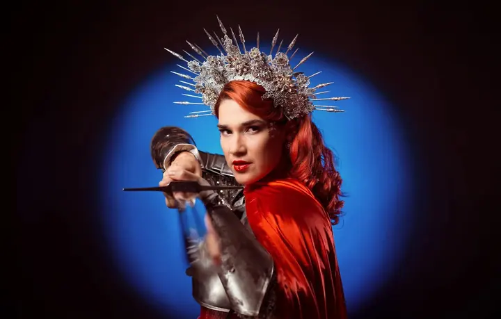
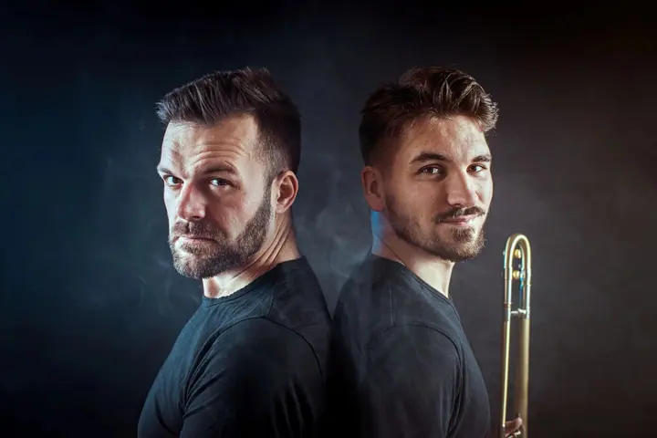
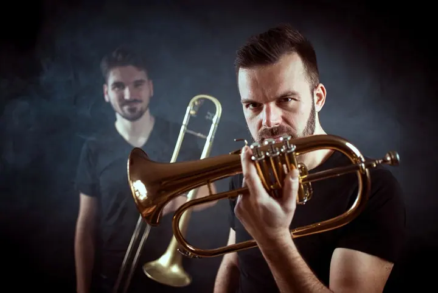
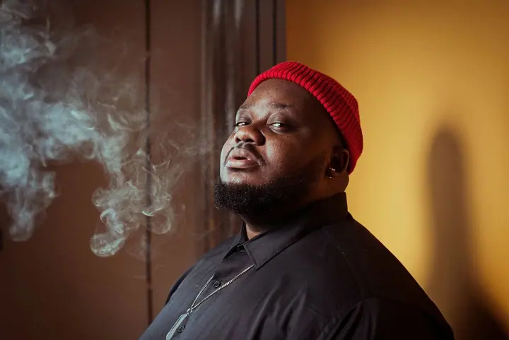
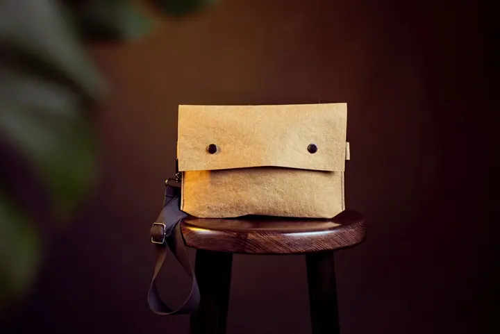
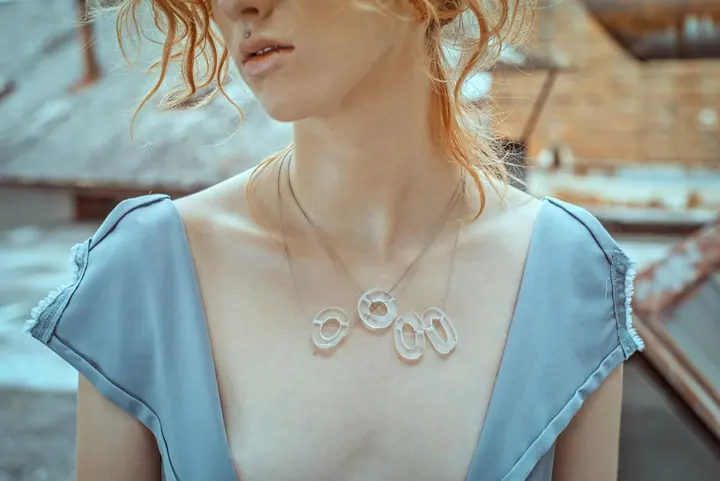
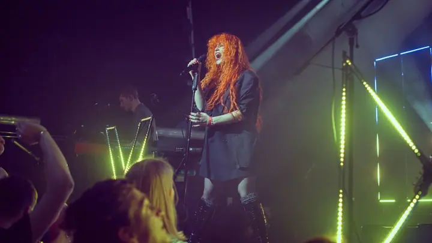
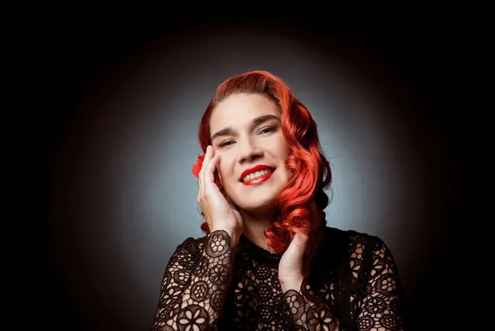
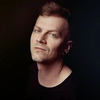

01 / 04
Produktové focení
Fotky na e-shop na bílém nebo jiném pozadí, aranžované studiové snímky i lifestyle fotky v reálném prostředí, klidně s modely. Fotím v ateliéru v Brně, zakázky přijímám z celé ČR.
Zeptat se na termín→







Portréty a produkty, které prodávají
Zeptat se na termín →(01) Ahoj
Jmenuji se Jarda Krézek a jsem fotograf z Brna. Fotím portréty lidí, kteří se potřebují dobře prezentovat, produkty pro e-shopy a značky a taky koncerty a promo kapel. Většinu zakázek fotím ve svém ateliéru v centru Brna, ale rád přijedu i za vámi.
(02) Co fotím
01 / 04
Fotky na e-shop na bílém nebo jiném pozadí, aranžované studiové snímky i lifestyle fotky v reálném prostředí, klidně s modely. Fotím v ateliéru v Brně, zakázky přijímám z celé ČR.
Zeptat se na termín→02 / 04
Portréty na web, sociální sítě, LinkedIn nebo do CV. Můžou být „na slušňáka“ i kreativní, hlavně aby vás dobře reprezentovaly.
Zeptat se na termín→03 / 04
Promo fotky pro kapely a hudebníky na sítě, obaly alb, plakáty i streamovací platformy. Koncerty fotím pro kluby, promotéry i samotné interprety.
Zeptat se na termín→Dále nabízím
Portréty zaměstnanců přímo v sídle firmy. Na domluvě je i focení reportáží, firemních akcí, konferencí nebo interiérů.
↗(04) Postup
Od první zprávy po hotovou galerii.
Krok 1 z 4
Pošlete mi pár vět o tom, co potřebujete nafotit. Obvykle odpovídám do druhého dne a společně probereme detaily.
Krok 2 z 4
Domluvíme styl, místo a termín. Produkty můžete poslat zásilkovou službou nebo je přivézt osobně do ateliéru.
Krok 3 z 4
Fotíme v ateliéru v centru Brna nebo u vás. Pokud chcete, můžete být u focení a dohlédnout, aby to vašemu produktu slušelo. Pak se postarám o postprodukci.
Krok 4 z 4
Fotky dostanete v požadovaném formátu, připravené k okamžitému použití na webu, e-shopu nebo sítích.
Dobré fotky prodávají. Klišé, ale je to tak.
(05) Za objektivem
Jsem fotograf z Brna a věnuji se hlavně produktové a portrétní fotografii. Fotím pro firmy, značky i jednotlivce, od produktů na e-shop přes reklamní fotky až po portréty na web, LinkedIn nebo do médií. Ke všemu se snažím přistupovat tak, aby vám fotky pomáhaly získávat nové zákazníky.
Vedle focení se dlouhodobě věnuji fotografickému vzdělávání, postprodukci a marketingu. Jsem redaktorem časopisu Digitální foto, šéfredaktorem magazínu Milujeme fotografii a lektorem fotografických kurzů. Jako spoluautor jsem se podílel na několika knihách o fotografování a postprodukci. Fotografie pro mě tak není jen práce, ale obor, kterým se zabývám z různých stran.
Když zrovna nefotím nebo nepíšu, nejspíš někde cestuju. Mám slabost pro Sicílii, italské jídlo a japonskou minimalistickou estetiku. Zajímají mě jazyky, knihy, hudba a spousta věcí, které nejsou vůbec užitečné, ale vím o nich zbytečně moc.

Jaroslav
Jaroslav Krézek · Portrétní, produktový a koncertní fotograf
Ve svém ateliéru na Václavské 237/6 v Brně, v budově bývalé továrny Lae Factory u tramvajové zastávky Václavská. Fotím ale i kdekoliv jinde, kde si budete přát, a firmám nabízím focení zaměstnanců přímo v sídle firmy.
Balíček BASIC je 30 minut focení a 3 retušované fotky za 2 500 Kč. Balíček PLUS je focení až na 2 hodiny a 6 retušovaných fotek za 5 000 Kč. Každá další fotka stojí 200 Kč.
Fotky na bílém nebo jednobarevném pozadí vycházejí od 150 Kč za fotku, aranžované projekty obvykle na 5 000 až 30 000 Kč. Cena záleží na typu produktu, počtu fotek a náročnosti aranže a retuší, proto vám rád připravím kalkulaci.
Napište mi. Kromě portrétů, produktů a hudby můžu nabídnout třeba focení reportáží, firemních akcí, konferencí nebo interiérů.
(07) Kontakt
Napište pár vět o tom, co si představujete, a termín, který se vám hodí.